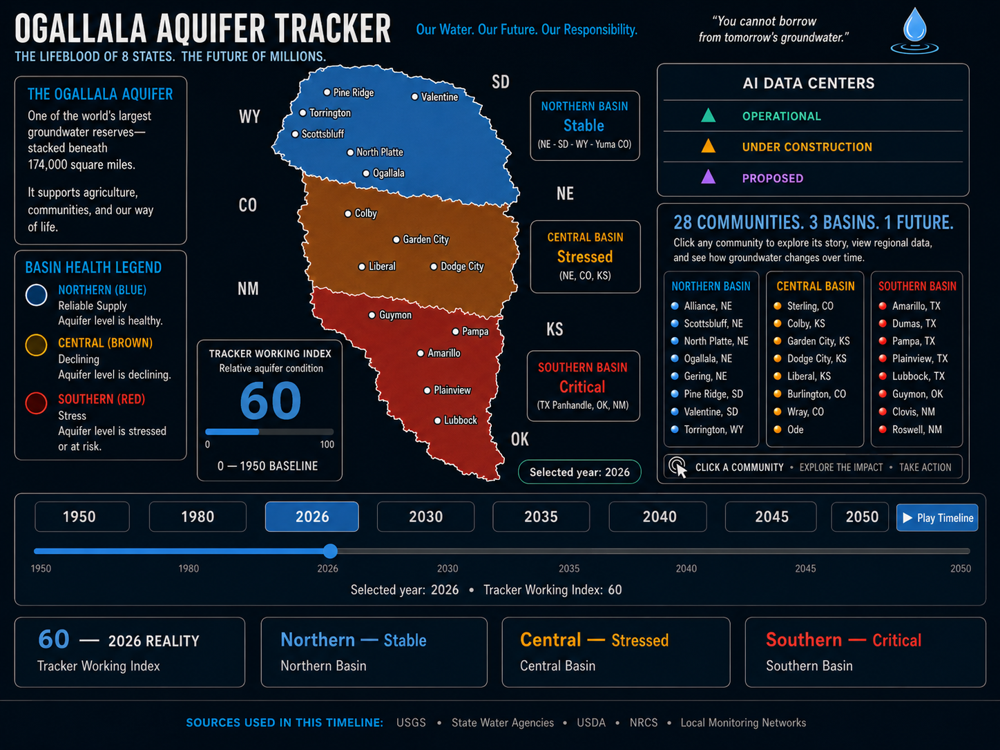

OGALLALA AQUIFER TRACKER · VERSION 3.4
V3.4 Home
Interactive Timeline
Data Center Watch
AI Data Centers
Monitoring Well Library
My Aquifer
Community Action Toolkit
Sources
Version 3.4 Interactive Timeline:
exact approved master artwork for each year.

24 COMMUNITIES. 3 BASINS. 1 FUTURE.
Goodland, KS
Alliance
Gering
Sterling
Burlington
Wray
Goodland
Dumas
Clovis
Roswell
Approved master: 2026